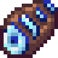
银鱼骨
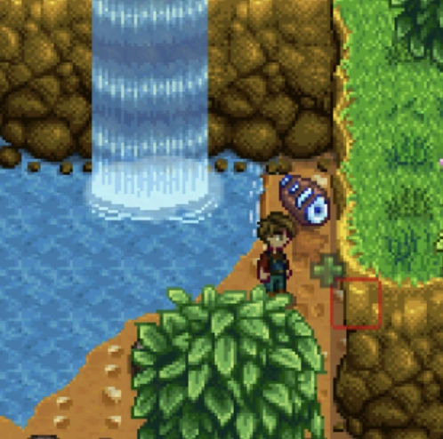
这件遗物会刷新在瀑布附近的泥地区域，也就是平时会出现石头和矿点的那类地面。下图就是银鱼骨的一个典型刷新位置。
- 主要来源：瀑布附近的泥地拾取。
- 推荐做法：经过瀑布地带时顺手检查地面刷新物。
- 注意事项：重点看泥地区，不是在普通草地上出现。
这个页面整理里奇赛德任务“准备工作”里需要提交的九个物品，包含每个物品的中文获取说明，以及你提供的位置截图，方便按图索骥逐个收集。
这九件物品里，有些是雨雪天气才会刷新，有些需要在特定日期、夜间，或击败指定怪物后获得。建议先看刷新条件，再决定当天优先跑哪一条路线。


这件遗物会刷新在瀑布附近的泥地区域，也就是平时会出现石头和矿点的那类地面。下图就是银鱼骨的一个典型刷新位置。
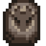
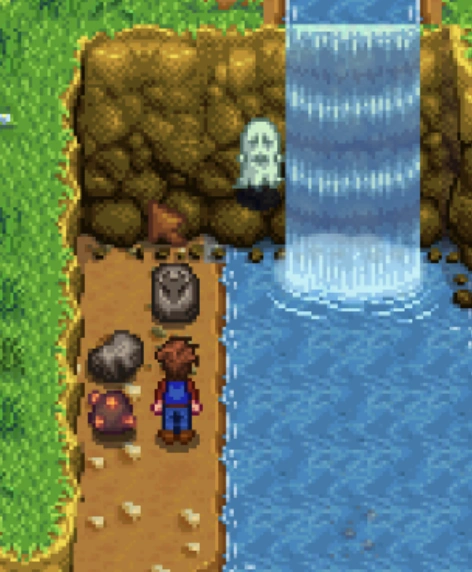
这件遗物同样会刷新在瀑布附近的泥地区域，和石头、矿点会出现的地块类似。下图展示的是墨迹化石的一个刷新示例。
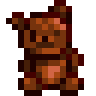
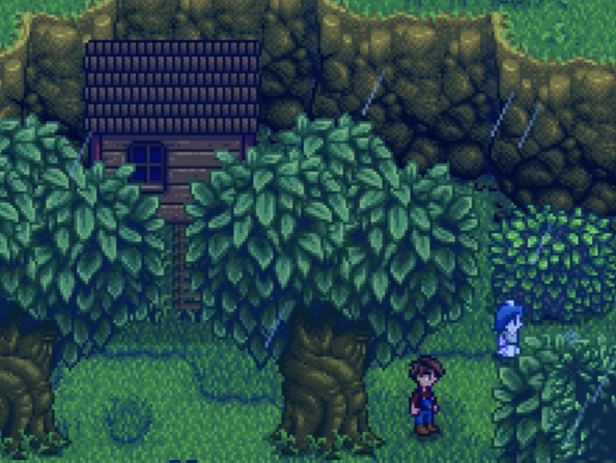
前往森林中、位于“爱之神秘瀑布”上方偏右的树屋。下雨天时，会有一个小女孩从树屋下来并站在外面，和图片中的位置一致。与她对话后，她会把空心泰迪熊交给你。
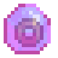
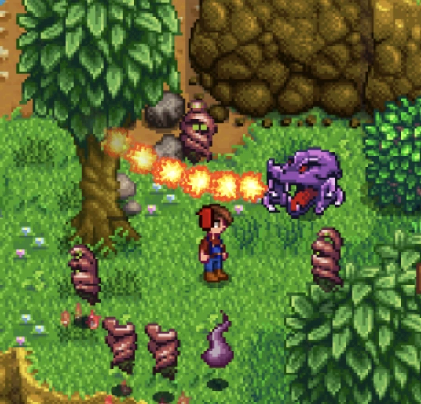
这件物品需要击杀怪物后获得，目标怪物是 Viperial。这个怪会在山脊森林（The Ridge Forest）出现。
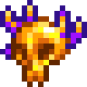

这件物品同样是击杀怪物掉落，目标也是山脊森林里的 Viperial。
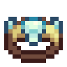
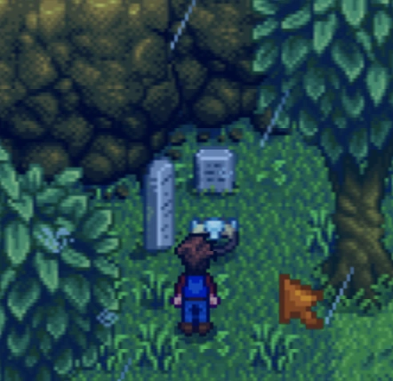
前往“献祭瀑布”上方森林里的两座墓碑附近。无论任何季节，只要是下雨、雷暴或下雪天气，贝壳手镯就会按图中的位置刷新出来。
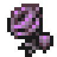
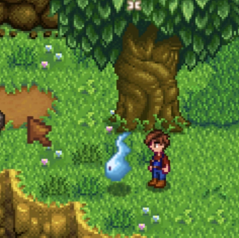
每个月的 3、6、9、12、15、18、21、24、27 日，山脊森林中央会出现一个浅蓝色版本的 Corrupt Spirit，位置如图。它不会攻击你，直接与它对话，就会获得“情人之殇”。
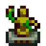
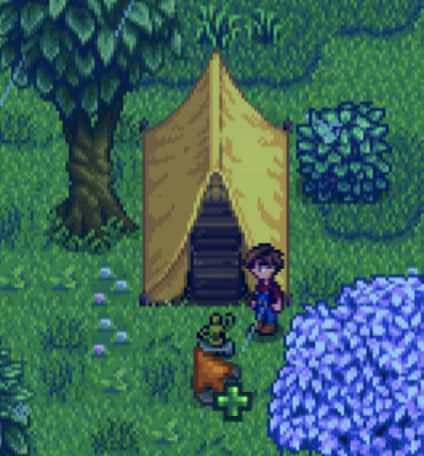
进入森林后立刻往左走，到左下区域的黄色帐篷附近。无论任何季节，只要是下雨、雷暴或下雪天气，黄色木雕就会按图中位置出现在帐篷前方。
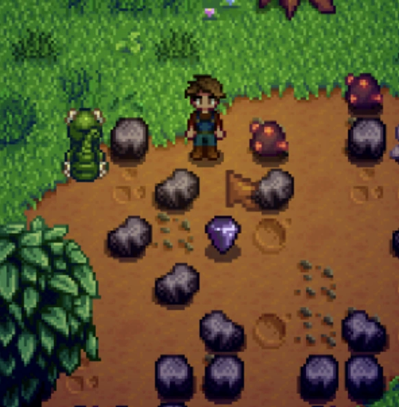
它会在夜间出现，也就是晚上 6 点以后，刷新在森林里那些会生成石头和矿点的小型采石区，位置如图。拿取时不需要任何工具，像采集地面可拾取物一样直接捡起即可。